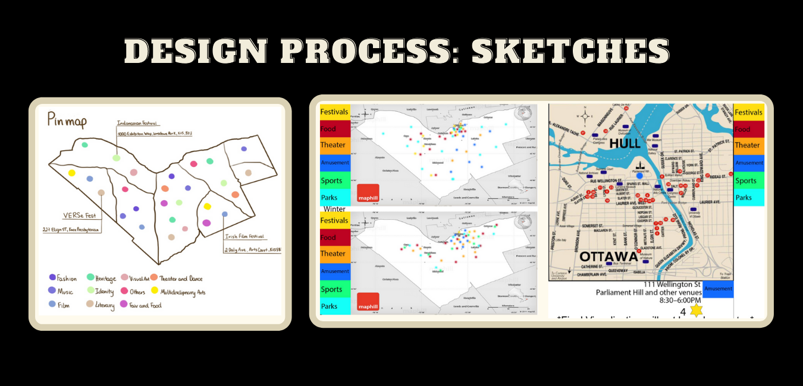

.png)
Motivation
Our target audience is university students, specifically university students who are in Ottawa for the first time. We don't expect our users to know anything about Ottawa. With our system, users will be able to filter programs and festivals according to their individual tastes, such as identity, music, food, etc. We started with the question “What is there to do in Ottawa?” then narrowed it down to “What activities are there for university students who like arts & crafts?”
Data
We have two datasets, one for winter programs from 2019, and one of cultural festivals in and around the city of Ottawa. Both are taken from the Open Ottawa data portal.
Included in the table below are the columns as they are available in the raw dataset and their data type. As you can see, most of the data is categorical with the
exception of location-based data, i.e. longitude, latitude, address, postal code, etc.
Recreation Guide Winter 2019
Cultural Festivals
| Cultural Festival | Recreation Guide |
|---|---|
| Subject: categorical | Activity code: categorical |
| Name: categorical | Category: categorical |
| Month: ordinal | Title: categorical |
| Location: categorical (place names) | Description: categorical |
| Address: quantitative geospatial | Session: categorical |
| Postal Code: ordinal | Status: categorical |
| Venue Type: categorical | First class: ordinal (date) |
| Description: categorical | Last class: ordinal (date) |
| Longitude: quantitative geospatial | Course number: categorical |
| Latitude: quantitative geospatial | Complex: categorical |
| Website: categorical | Facility: categorical |
| Email: categorical | Price: quantitative |
Task Analysis
During the interview with Prof Sprague, it quickly become clear that he, specifically was only interested in indoor dining. Prof Sprague is only one data point and since his interests were quite narrow he went against our initial assumption of what people wanted from the capital. Even so, it reaffirmed our conclusion that we needed to focus more on category/type over location. So that became our main task: to show users festivals and programs of the category they liked rather than show them all the events Ottawa had to offer.
Design Process
.png)
The image on the left is our rough sketch of what we wanted our visualization to look like, incorporating all the feedback we had received thus far. On the left is our first attempt at coding the visualization.
Final Visualization

Data Analysis
Cultural Festivals: With almost 35 events hosted, Identity is the subject that holds most of the event while the range of other subjects stays under 15, the minimum is five from Literary. We found that Ottawa is a multicultural city with many different celebration festivals from all around the world. Our purpose is to determine the target audience as well as their interest when it comes to a specific type of event. Winter Programs: The recreation guide had tons of data from various age groups and many different activities we grouped into a few subcategories. Like “sports,” the second sport, We used the number of activities because the more activities mean the more popular it is (why make ten events on the same thing when only five people planned to show up). We found that many people prefer sports activities and physical activities out of other recreational activities. We were hoping to determine what age groups preferred each activity, but the data provided changes based on age.
Conclusion
So far, our group has completed the majority of the given tasks. Despite the disadvantage of having a smaller group, we still try our best to keep up with the workload and have them done on time. Since each member stays in a completely different timezone, it's not the easiest to keep connected. If there is something we could do to improve our work's quality, that would be planning ahead of time. By having better time management, each member can make room for special dates/meet up to discuss the group project, therefore, having a better outcome. Also, we think the roles/goals/tasks should be outlined clearly indicates each individual.